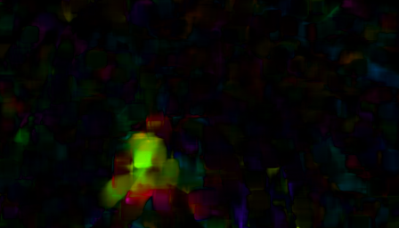
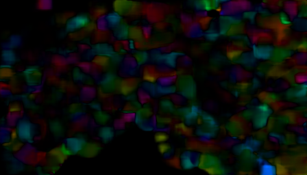
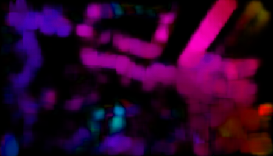

By comparing with all baselines, we emphasize three key capabilities of our method that are accountable for the two key designs. Specifically, we observe good performance on generating instructional videos for actions with (i) large hand positional motion (without hallucination in the background); (ii) object state changing; (iii) subtle dexterous fingertip motion. Our proposed learnable automatic Region of Motion mask generation helps the model to focus on the accurate region for the action (``i'' and ``ii''), avoiding distraction from the cluttered background commonly seen in instructional videos. Our novel hand structure loss helps the model handle the actions with complex but essential fingertip motion (``iii''), which is rarely seen in previous non-instructional video generation benchmarks.
For each sample, the first row displays the input context image and the results from different methods. In the second row, we first present the predicted Region of Motion mask from our Stage One model. Additionally, we show the motion flow below each generated video in the second row. Note that the motion flow is not part of the model’s outputs; it is shown solely to facilitate easier comparison among methods. Finally, we provide the Input Target Action Prompt (e.g., “Pick up and crack egg.”) and the Enriched Action Description (e.g., “The person uses their left hand to pick up an egg from the egg box and cracks it into a bowl.”).
Large Hand Positional Motion
Input Image
LFDM
AVDC
PIA
SORA
Animate Anything
Ours
"Pick up and crack egg."→"The person uses the left hand to pick up an egg from the egg box and cracks it into a bowl."
"Throw paper into bin."→"The person uses the left hand to open the bin and throw the paper into the bin using the right hand."

"Julienne carrot."→"The person holds a carrot on the chopping board with the left hand and uses a knife in the right hand to julienne the carrot."
"Roll dough."→"The person uses both hands to roll the dough into a ball."
"Shake soy milk."→"The person holds a container of soy milk in the left hand and shakes it vigorously."

"Cut cucumber."→"The person holds a cucumber with the left hand and uses a knife in the right hand to cut the cucumber."
Subtle Dexterous Fingertip Motion
Input Image
LFDM
AVDC
PIA
SORA
Animate Anything
Ours
"Peel garlic."→"The person holds a garlic clove in the left hand and uses the right hand to peel the garlic."
"Wash fruit."→"The person holds the fruit in the left hand and continues to wash it under the running tap using the right hand."
"Knit the fabric."→"The person uses the crochet in the right hand to knit the fabric held in the left hand."
Object State Changing
Input Image
LFDM
AVDC
PIA
SORA
Animate Anything
Ours

"Pour vinegar into bowl."→"The person holds a bottle of vinegar in the left hand and pours it into a bowl, adding it to the mixture."
"Stir the pasta."→"The person holds a wooden spoon in the right hand and continues to stir the pasta in the pan on the hob, while using the left hand to support the pan."
"Drop garlic into fridge."→"The person use the right hand to open the fridge and drops a pack of garlic from the left hand into the fridge."